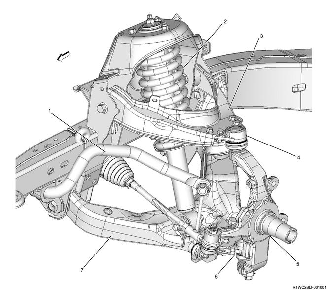
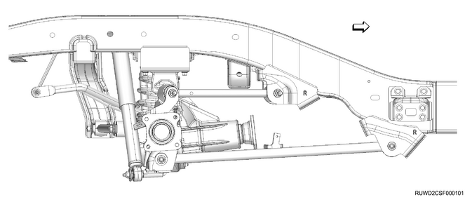
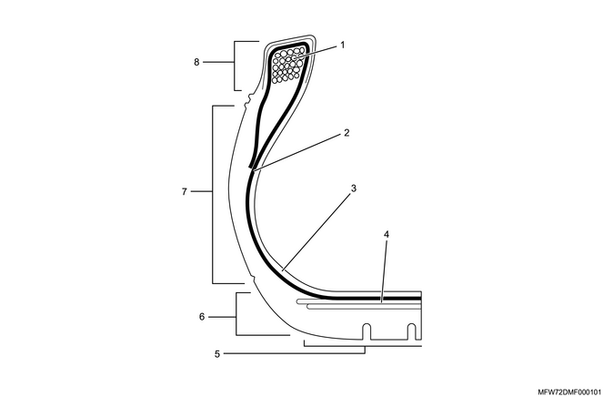
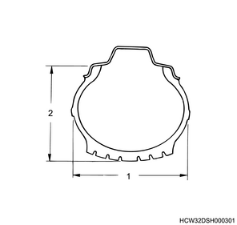
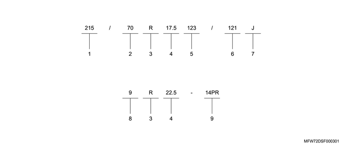

Note

Note

Wheels and tires
A road wheel is comprised of a tire and disc wheel and rotates as a unit. It supports the whole load of the vehicle with the tire air pressure and maintains proper cushioning. It is also a device to gain transmission of power and maneuverability during steering through the contact surface of the tire.
The functions of tire include load supporting, cushioning, transmission of braking and driving force, handling stability, etc., all of which are indispensable.
Note

Bead wire
High-carbon steel wire used for reinforcing the rim section of a tire.
Carcass
Layers of rubber-coated cords bonded to each other to form the framework of a tire.
Inner liner
A highly airtight rubber layer attached to the inner side of a tire.
Belt
The belt is a cord layer between the tread portion of the tire and the carcass that keeps the carcass securely tightened and increases the rigidity of the tread.
Tread section
A thick rubber layer on a tire which comes in contact with the road surface. It protects the carcass inside from shocks and damages from the road surface, etc., and also has a role in extending the worn life of the tire. In addition, various kinds of tread patterns are engraved onto it.
Shoulder section
A rubber layer between the tread section and the sidewall section. It diffuses the heat generated while driving as well as protecting the carcass.
Sidewall section
A rubber layer between the shoulder section and the bead section. It protects the carcass. Information such as the tire dimensions and the manufacture's name is indicated here.
Bead section
A ring-shaped reinforcement section made of bead wires bundled together with rubber coating. It fixes the tire to the rim of the disc wheel when the air is inserted.
Tire tread patterns
Tread patterns are grooves that are engraved in the tread section and have the functions of discharging water, obtaining braking, driving and towing forces, improving maneuverability and stability, dissipating tire heat, etc.
Note

Note

| No. | Meaning | Explanation |
| 1 | Cross-section width: mm | The width obtained by excluding the pattern, letters, etc., on the side surface of the tire from the entire tire width. |
| 2 | Oblateness | A value that represents the ratio of the cross-section height in relation to the cross-section width. Oblateness (%) = (Cross-section height / Cross-section width) x 100 |
| 3 | Structure symbol | R is the abbreviation for "radial structure". |
| 4 | Rim diameter | Tire inner diameter |
| 5 | Load index (single wheel) | A value that indicates the maximum loading capacity of a tire under specified conditions. |
| 6 | Load index (multiple wheel) | |
| 7 | Speed symbol | A symbol that indicates the speed (maximum speed = performance) at which a tire can run under specified conditions. |
| 8 | Cross-section width: inch | The width obtained by excluding the pattern, letters, etc., on the side surface of the tire from the entire tire width. |
| 9 | Tire strength | The larger the number is, the higher the strength becomes. In other words, as the air pressure inside the tire becomes higher, the tire load capacity is higher as well. PR is the abbreviation for "ply rating". |